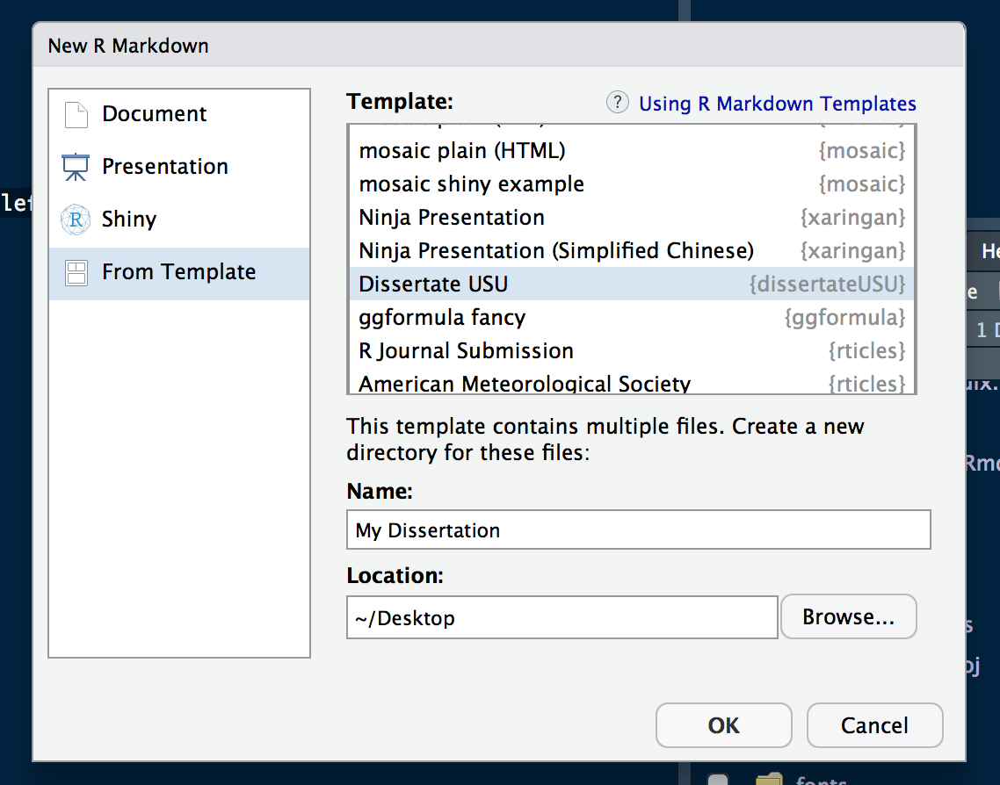
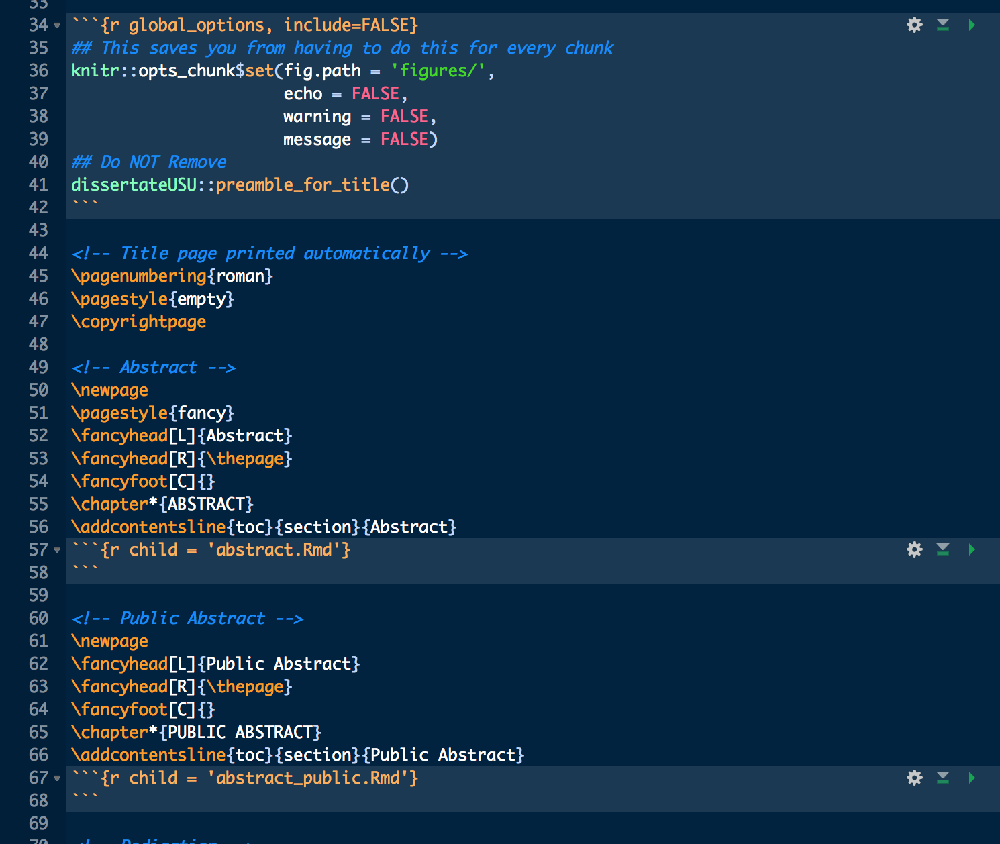
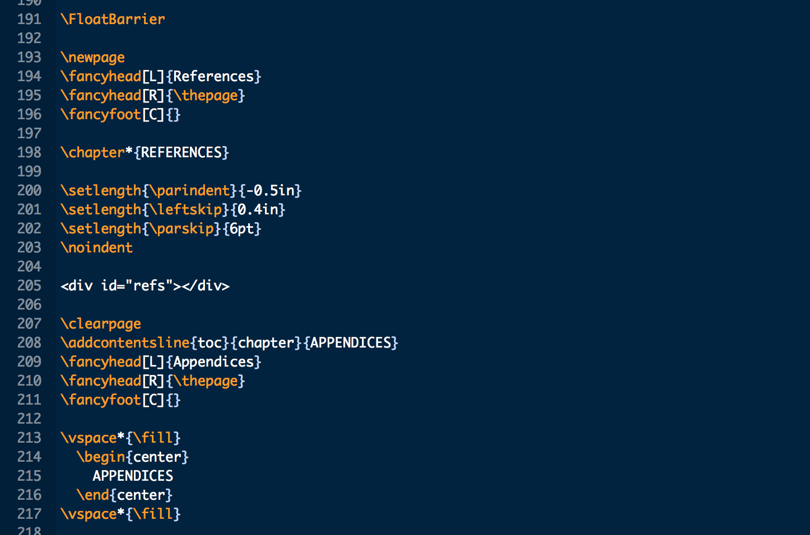
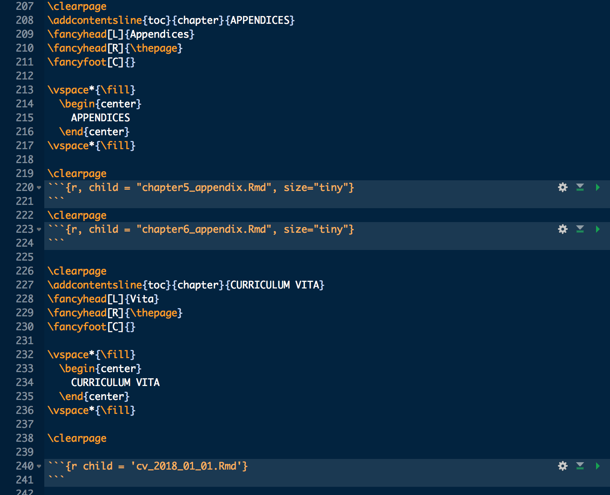

Writing Your Dissertation (or Thesis) in RMarkdown
A few days ago I announced that I had completed the requirements for a PhD in Quantitative Psychology and (maybe more interestingly) that I had written my entire dissertation in Rmarkdown. It was more of a shoutout to @RStudio but the interest in how I did it was exciting.
I defended my dissertation and now have a PhD 🤓 Excited to have that over with.
— Tyson Barrett (@healthandstats) February 10, 2018
My entire dissertation was written in #rstats with #rmarkdown and got many compliments about the look of the manuscript - grateful to @rstudio for providing those incredible tools
Several indicated that they’d like to see the process I went through to do this. Questions included:
- How I used RMarkdown for the writing,
- How I formatted it to match the University’s formatting standards, and
- How I worked with my PI while writing with RMarkdown.
I want to answer each of these questions.
Writing with RMarkdown
First, I want to talk about how I went about writing a dissertation in RMarkdown. With the advent of bookdown, a number of people asked if that was the tool I used to write my dissertation. Although it is a fantastic tool that I have used elsewhere, I wanted the flexibility of using pure RMarkdown. What I mean by that is that I needed to be able to integrate Latex formatting files within the system without having to learn the ins-and-outs of bookdown.
The files I’ll highlight throughout this post can be found at osf.io/753kc. The first, and most important file, is the only file you’ll knit. It is the main .Rmd file, in my case, called MarginalMediation.Rmd. The header YAML in this file looks like this:
---
documentclass: DissertateUSU
title: 'Title'
author: Your Name
output:
pdf_document:
latex_engine: xelatex
includes:
in_header: preamble.tex
keep_tex: yes
bibliography: Diss.bib
csl: ref_format.csl
geometry: [top=1in, bottom=1in, right=1in, left=1.5in]
nocite: |
@Burnham2002
@Iacobucci2007
@Mood2010
@Norton2012
@Edwards2007
@Hastie2009
params:
year: '2018'
degree: 'Your Degree'
field: 'Your Field'
chair: 'Your Chair'
committee1: 'Committee Member 1'
committee2: 'Committee Member 2'
committee3: 'Committee Member 3'
committee4: 'Committee Member 4'
gradschool: 'Graduate School Dean'
---Most of it contains pieces that, if you’ve used somewhat more advanced RMarkdown, you are probably familiar with. These include the title, author, output, bibliography, and nocite. The documentation for this can be found at RMarkdown’s website. The other pieces are more rare but still documented as useful YAML options in RMarkdown. Among these, documentclass: DissertateUSU is important. This pulls information from another file called DissertateUSU.cls, which ultimately controls much of the formatting of the outputted PDF file. This file was made particularly to match the specified formatting for Utah State University (thus the dissertateUSU name) and thus won’t be a perfect fit for all the other universities. My guess is that it is a great starting point for you to match your own situation’s guidelines.
This file has comments throughout to highlight what each section is doing. It includes the formatting of the title page as well. Using the Params: section of the YAML, the title page is populated with the information put there. It does this as, while knitting, a file called preamble.tex is written through a function that is found early in the RMarkdown file. This function comes through the dissertateUSU R package on GitHub (download with devtools::install_github("tysonstanley/dissertateUSU")). After installing the package, I recommend using the template to get going using the approach shown below.

This provides a starting template for the main .Rmd file. It doesn’t include the R chunks but you can easily add those. It will look something like that below (minus the R chunks but I recommend, as I said before, adding them).

For those familiar with RMarkdown, this starting R chunk (the only one present in the template) is important for the remainder of the file. There’s a warning ## Do NOT Remove above the dissertateUSU::preamble_for_title() function. That is the function that takes the information from the Params:, places them in a preamble.tex file that fills in the title page information.
In the preceding image, you may have noticed the use of the R chunk option: child = 'abstract.Rmd'. This means it takes the abstract.Rmd file in the same directory and knits in within the main .Rmd file. That is, the abstract file that I wrote in a separate RMarkdown file, will appear within the main output with the formatting provided in the main .Rmd file.
This general appraoch of using the child = option allows you to write each chapter within its own .Rmd file (without worrying too much about formatting). This allows editing and error finding to go much more smoothly. You’ll see in the OSF repository that I have my files for all my chapters and the different front matter (abstracts, dedication, acknowledgement, etc.). These are very simple .Rmd files.
This is how the majority of the writing went. I added the writing and other information, including R code (which is printed in the appendices). However, the References, the appendices and the CV at the end of the document took a little bit of hacking to make it work right.


This “hack” required using <div id="refs"></div> (line 205 in the image) to force the references to be printed before the appendices and CV. Further, the appendix files essentially grab the code used in the manuscript and, using echo=TRUE in the R chunks, prints them nicely.
For the references, I used a BibTex file, in this case called Diss.bib. I used Mendeley as my references manager and then exported all of my references to the .bib file. This allowed me to use the regular RMarkdown citing while using csl: ref_format.csl (note that it is CSL and not CLS that is used for the formatting) to format the references correctly (in my case APA style). This file was downloaded from the vast repository of csl files. I looked for the one that fit what I was looking for, downloaded it, and named it ref_format.csl and put it in my dissertation’s directory.
I’m hoping between this post and the OSF repository, this provides you with the information to start writing and formatting your dissertation within RMarkdown.
Other Things
- For spell checking, I used the built in spell check in RStudio. It wasn’t perfect but worked really well.
- For version control, I used the Open Science Framework (OSF; where I have the files linked). I would have used Git and GitHub had there been collaborators that knew how to use it. This worked well as it provides a simplified version control system while providing tools to share it later.
- I used some simulations in my dissertation. I used a regular script file to write these and run them (using the terminal when possible). I pasted this code within the manuscript toward the end of the writing (when I knew the simulations were done). This allowed me to include them in the appendices more easily.
As a final note, I recommend using RStudio Projects as well. These help keep things more organized, especially when it comes to saving and reading in different files.
Formatting the PDF
Formatting took a lot of Latex code that, honestly, I googled. It provided guidance on how to make small changes to the overall formatting. The vast majority of the formatting took place in the DissertateUSU.cls with a little happening in the main .Rmd file.
I don’t have time to go into detail here as most formatting is based on Latex. Many universities have latex style files that you can use, which can save you loads of work as the formatting will be done for you in large measure.
Working with a Non-useR PI
This may have been the most challenging part of the process. If you have a PI that knows markdown or Latex, then you should be good to go with editing and updating the document using any number of version control systems (like Git with GitHub.com). However, a vast number of senior researchers do not use these, generally using Microsoft’s Word.
This is how my situation was. My PI at first wanted Word documents that she could edit using “track changes.” But I convinced her that, given my desire to have a reproducible workflow and use R throughout all my analyses, this was an appropriate strategy to avoid inputting mistakes. It took some convincing but I outlined the errors that I was going to avoid using this system:
- My tables would be made automatically and, with minor updating, would be publication ready. No manual input of the numbers in the table can not only save my time but my PI’s time checking the table for little errors. Thus, if my analyses were correct, so were my tables.
- My figures would auto update. If I made a change or fixed an error, I didn’t have to go update it in the manuscript. Instead, it was automatically updated in the manuscript itself.
- The manuscript, in general, looks more professional than those produced by Word. The formatting feels sharper, the figures are auto-fitted on the page (as a floating object), and the table and figure auto-numbering is easy to use and hard to mess up (in contrast to Word which I always struggle not messing up). In addition, the formatting is more predictable using this approach than through Word (e.g., Word tables can randomly go all crazy, leaving cells out or combining them without you asking).
These plus other R related benefits (free, open-source, the helpful community, etc.) helped me win her over to this approach (and the fact that she is a very reasonable researcher that I’ve enjoyed working with).
With this, we agreed that I would produce the PDF files that she could mark up and return to me with comments.
Notably, another approach we almost took on (that I think works well too), is to produce the Word documents without too much formatting using the .Rmd files. Then, after the initial round of edits (so that from there, there would be fewer edits), use the well formatted PDF files for her to see the look of the pages and make smaller edits and comments.
Overall, this is probably the biggest hang up for most individuals that are interested in using RMarkdown with a PI that doesn’t use Markdown, Latex or R.
Conclusions
This was a quick introduction to how I wrote my dissertation using RMarkdown. I hope it was helpful to at least get started on the road to using RMarkdown for your own scientific writing. Please leave feedback if you have time!